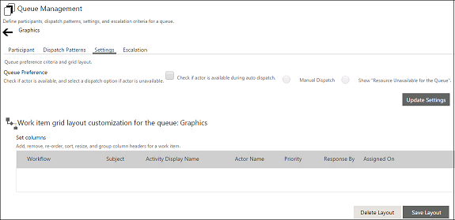

No
The layout for the Work items list for items assigned to a queue can be defined in the Settings tab of the Queue Management window. The Worklist Layout can be customized for the following:
For more information on customization options, see Work Items List Layout Customization.
Note: The default view of the Work items list in the Enterprise Console cannot be customized. The above customization applies only to Work items lists created by embedding the Work Item List Control in an ASPX page. For more information about using AVEVA Work Tasks Controls as a part of a project, see Using Controls in Applications in the Developer Guide.
WorkList Layout Customization for the Queue
